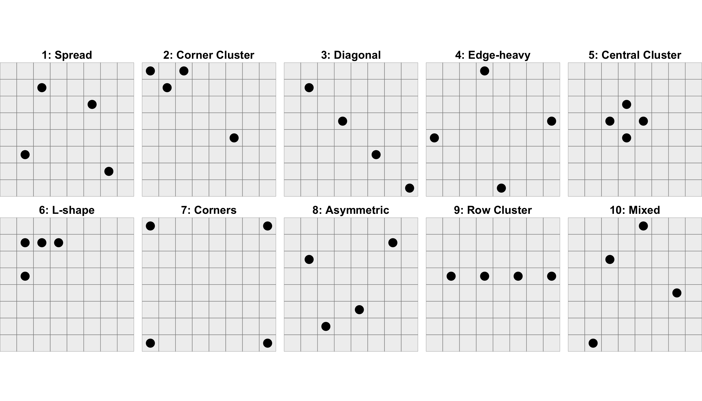
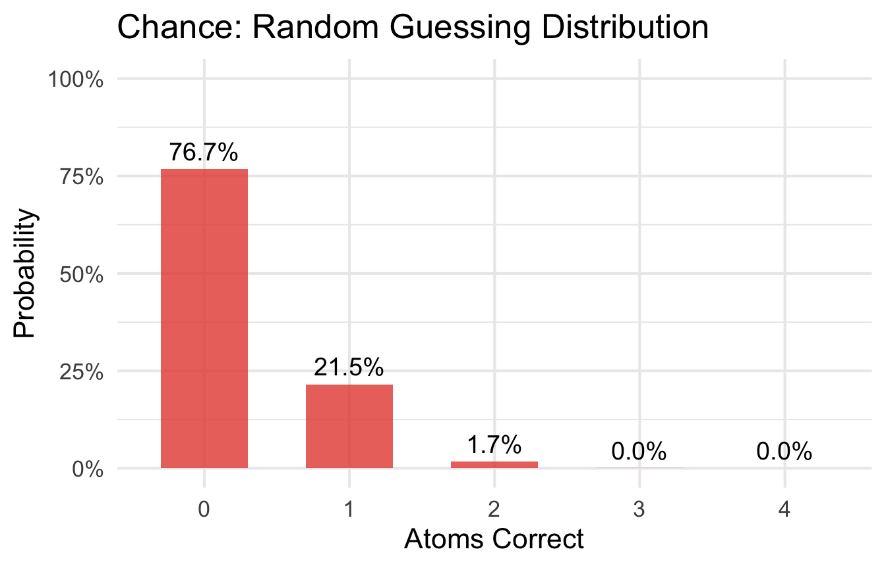
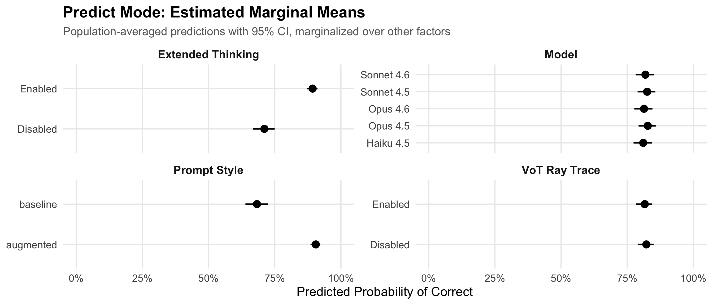
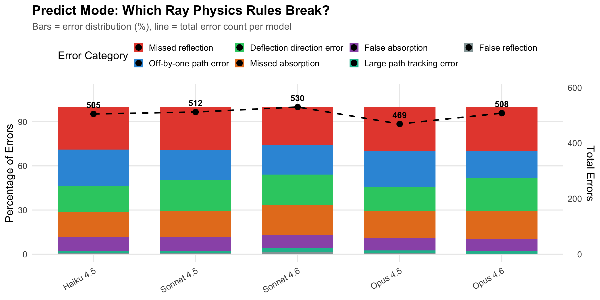
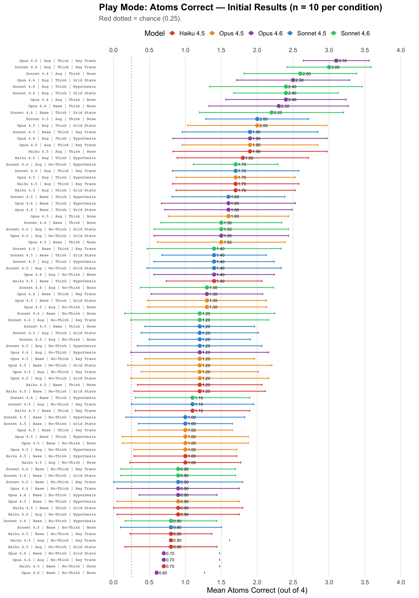
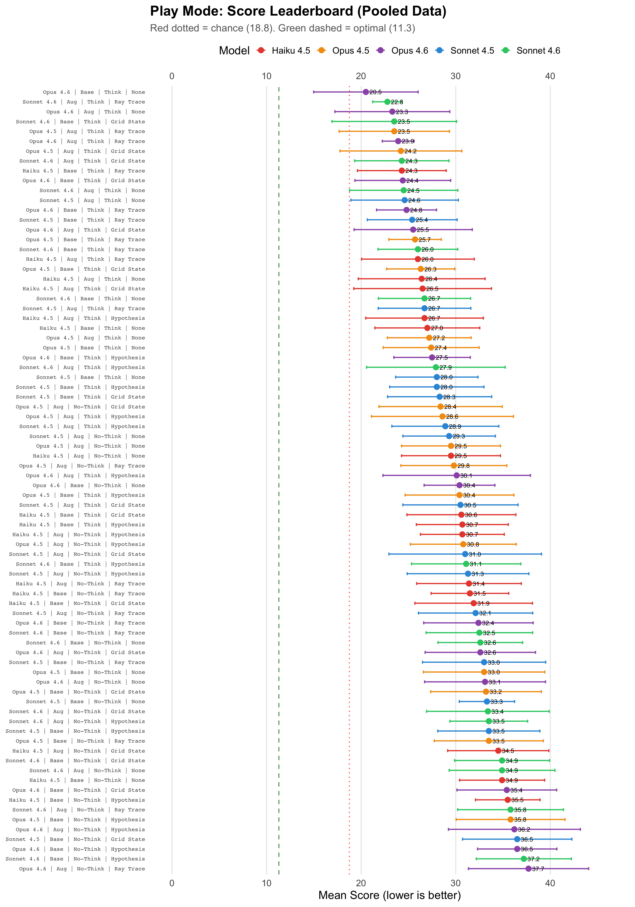
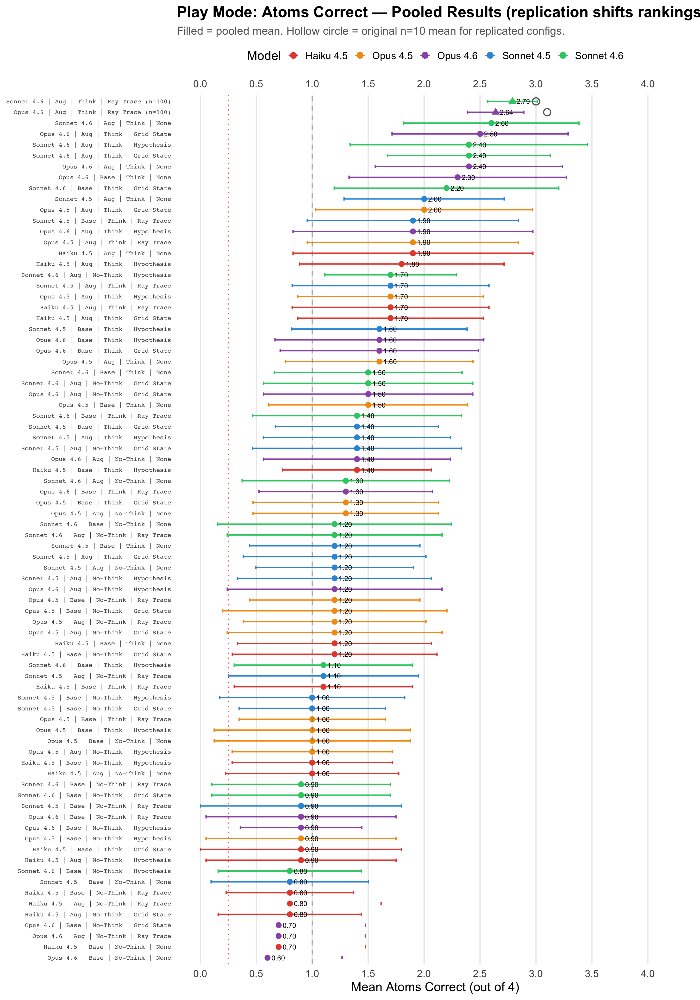
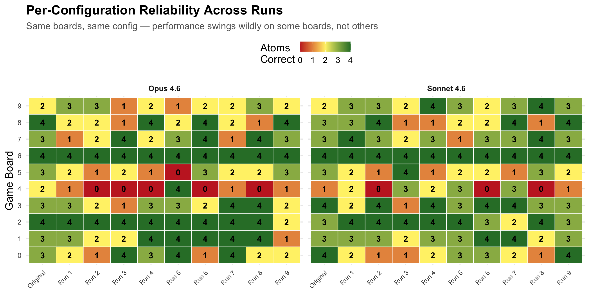

Black Box as a Diagnostic Reasoning Benchmark
Assessing LLM Capabilities in Hidden State Identification
Slides last updated March 19, 2026
Todd R. Johnson
University of Texas Health Science Center at Houston
2026-03-25
Follow Along
Clinical Reasoning at Scale
LLMs are being deployed across clinical reasoning tasks at unprecedented speed.
In 2024, 31.5% of 2,174 US hospitals deployed generative AI in clinical workflows; another 24.7% planned near-term adoption (Everson, Nong, and Richwine 2025)
2024 survey with responses from 43 of 67 Scottsdale Institute health systems all reported active AI adoption in clinical documentation (ambient listening at 100%) (Poon et al. 2025)
1 (2019) → 557 (2024) papers/year evaluating LLMs in clinical medicine (Shool et al. 2025)
Scope of deployment: Triage · Differential diagnosis · Clinical documentation · Test ordering · Referral decisions · Prior authorization · Coding · Treatment planning
The Case for Deployment
Benchmark Milestones
GPT-4: ~86% on USMLE-style questions, exceeding passing threshold by 20+ points (Garabet et al. 2024)
Med-PaLM 2: Scored 86.5% on MedQA (USMLE-Style). (Singhal et al. 2025)
- Physicians preferred Med-PaLM 2 answers over generalist physician answers 65% of the time.
AMIE: Outperformed primary care physicians in structured diagnostic conversations including information acquisition (Tu et al. 2025)
Clinical Evidence
NEJM case records: GPT-4 included the correct diagnosis in its differential for 64% (34% as top diagnosis) of complex clinicopathological cases from NEJM. (Kanjee, Crowe, and Rodman 2023)
LLM alone: 92% diagnostic accuracy on 6 clinical vignettes vs. 74% (conventional resources) and 76% (with LLM) for physicians (Goh et al. 2024)
Emergency dept: GPT-4 was better than ED resident physicians in diagnostic accuracy across 100 real cases (Hoppe et al. 2024)
The Case for Concern
Healthcare is adopting LLMs for tasks that require clinical reasoning, based on benchmark evidence that measures pattern recognition
1. Context matching, not reasoning (Wen et al. 2025)
2. Base rate neglect is systematic (Omar et al. 2025)
3. Reasoning traces don’t reflect actual computation (Chen et al. 2025; Matton et al. 2025; Kambhampati et al. 2024; Shojaee et al. 2025)
Context Matching, Not Reasoning
Evaluated LLM performance on clinical Multiple Choice Question and Answer (MCQA) benchmarks
LLMs pattern-match against available answer options rather than independently reasoning through clinical scenarios (Wen et al. 2025)
- Expand options from 5 to 26 → small models collapse, exposing memorized answer positions
- Rephrase with synonymous terms → different (wrong) answers despite identical clinical content
- Replace correct answer with “None of the Above” → models confidently select a wrong option
Tested across 8 models and 4 benchmarks: Invalidates generalizability of MCQA results
Implications: Context Matching, Not Reasoning
Invalidates three assumptions with respect to MCQA results (Wen et al. 2025):
- Knowledge is applied, not memorized
- Semantic consistency will lead to consistent answers
- Situations with no answers can be recognized.
Base Rate Neglect Is Systematic
- 300 vignettes, 20 models — salient cue overrides base rate every time.
- Add “recently returned from Southeast Asia” to a fever-and-cough vignette → LLMs shift to malaria/dengue even when pneumonia remains far more likely. (Omar et al. 2025)
Reasoning Traces Don’t Reflect Actual Computation
- Models given incorrect hints construct elaborate justifications without acknowledging the hint (Chen et al. 2025; Matton et al. 2025).
- Models trained on wrong intermediate steps paired with correct answers still improve (Kambhampati et al. 2024).
- Reasoning models show sharp performance collapse at complexity thresholds on toy AI problems (e.g., Towers of Hanoi) (Shojaee et al. 2025).
Parallels to Human Clinical Reasoning
- Novice clinicians reason from first principles — backward reasoning from hypothesis to data (Patel and Groen 1991).
- Expert clinicians develop a clinically-organized knowledge base enabling rapid forward reasoning — data to diagnosis (Patel, Evans, and Groen 1989).
- Basic medical science knowledge and clinical knowledge function as two distinct systems; expertise involves reorganization, not just accumulation.
- Unlike LLMs, humans demonstrably possess both modes of reasoning.
Implications for Clinical (and Scientific) Reasoning
Thesis: The frontiers of medicine and science — new hypotheses, new mechanisms, new therapies — inherently demand first-principles reasoning.
Routine clinical cases may be solvable by pattern matching — but atypical presentations, rare conditions, and complex comorbidities require reasoning from first principles.
Novel diseases, emerging pathogens, and unexpected drug interactions have no patterns to match against.
If LLMs lack this capability, their utility has a ceiling that benchmarks built on routine cases will not reveal.
What’s Needed To Evaluate LLMs?
If clinical reasoning deployment is outrunning our ability to evaluate clinical reasoning, we need benchmarks that:
Out-of-Distribution
Problems not solvable by pattern matching to training data. No memorization shortcuts.
Computable Optimality Ceiling
Know how far from perfect a model is — not just pass/fail.
Decomposable
Isolate which component processes fail. Pinpoint the source of reasoning breakdown.
Process-Oriented
Evaluate how the model reasons, not just whether it gets the right answer.
What IS Diagnostic Reasoning?
| Component | Description |
|---|---|
| Hypothesis generation | Propose candidate explanations |
| Test selection | Choose informative observations |
| Constraint tracking | Maintain consistent evidence |
| Belief updating | Revise hypotheses with new data |
| Multistep reasoning | Reason through causal pathways. |
| Integration | Combine all components iteratively |
Diagnostic reasoning is abductive inference — reasoning from observed effects to hidden causes under uncertainty.
We Need a Controlled Lab
Four requirements for a diagnostic reasoning benchmark:
Out-of-Distribution
Problems not in training data. No memorization shortcuts.
Ground Truth
Verifiable correct answers. No ambiguity.
Decomposable
Can isolate component processes. Pinpoint failures.
Integrated
Tests the full diagnostic loop, not just individual skills.
Enter Black Box
Black Box (Eric Solomon, 1978)
- 8×8 grid with 4 hidden atoms
- Fire rays from edges, observe outcomes
- Deduce atom positions from ray behavior
- Three ray outcomes: Hit, Reflection, Detour
Key advantages
- (Currently) out-of-distribution
- Known ground truth and optimal solutions
- Easy for humans to learn
- Has been used to study diagnostic reasoning (Johnson and Krems 2001)

Click image to play Black Box
Scoring
Goal: Locate all 4 hidden atoms using the fewest rays possible
Ray cost (1–2 points each)
- Hit or Reflection: 1 point (entry only)
- Detour: 2 points (entry + exit)
Miss penalty
- Each incorrectly placed atom: 5 points
Score = ∑ ray points
information cost + (atoms missed × 5)
placement penalty
Lower is better — a perfect game means finding all 4 atoms with minimal rays.
Black Box as Diagnostic Instrument
Diagnostic Process
- Generate differential diagnosis
- Select next diagnostic test
- Track ruled-out conditions
- Revise hypothesis with new results
- Reason through causal pathways
- Integrate evidence iteratively
Black Box Analog
- Hypothesize atom positions
- Choose which ray to fire
- Track eliminated positions
- Update hypothesis after ray result
- Trace ray paths through grid
- Combine ray evidence to final guess
Research Questions
- Can LLMs perform forward reasoning — predicting ray behavior from known atom positions?
- Can LLMs perform inverse reasoning — deducing hidden atoms from ray observations?
- How do model scale, prompt engineering, and extended thinking affect performance?
- Where in the performance corridor do LLMs fall — between chance and optimal?
- Which component processes of diagnostic reasoning fail?
- What does this imply for diagnostic AI deployment?
Two Modes: Partial Decomposition
Predict Mode (Forward)
- Atoms are visible
- Model predicts ray exit position
- Tests spatial and multistep reasoning in isolation
- Each ray = independent API call (fresh context)
- “Given these atoms, what happens to this ray?”
Play Mode (Inverse)
- Atoms are hidden
- Model fires rays, deduces positions
- Tests full diagnostic loop
- Each game = multi-turn conversation (accumulating context)
- Hypothesis generation → test selection → constraint tracking → belief updating
Experimental Design
Factorial Design
| Factor | Levels |
|---|---|
| Model | Haiku 4.5, Sonnet 4.5, Sonnet 4.6, Opus 4.5, Opus 4.6 |
| Prompt | Baseline, Augmented |
| Thinking | Standard, Extended |
| VoT | None + 3 visualization prompts |
| Config | 10 fixed atom configurations |
VoT = Visualization of Thinking (Wu et al. 2024)
Scale
- Predict: 40 conditions × ~24 rays × 10 configs
- Play: 80 conditions × 10 configs = 800 games
- ~1,200 unique experimental conditions total
VoT Conditions (Play only):
- A: Grid State visualization
- B: Ray Trace visualization
- C: Hypothesis visualization
Baseline Prompt
Human-equivalent instructions — teach by example
- Describes game rules via ASCII diagrams showing deflection, reflection, absorption examples
- States scoring rules and action format
- No strategic guidance beyond “use as few rays as possible”
- ~90 lines, narrative tone
1
- * - - - - - - - - - - - - - -
- * - - - - - - - - - - - - - -
1 * * - - - - - - - - - - - - - -
- - O - - - - - - - O - - - - -
- - - - - - - - - - - * * * * * 2
- - - - - - - - - - - * - - - -
- - - - - - - - - - - * - - - -
- - - - - - - - - - - * - - - -
2Augmented Prompt
Adds algorithmic rules & reasoning scaffolds
- Replaces ASCII examples with algorithmic ray-tracing rules (entry check → subsequent cells → exit)
- Explicit deflection table by compass direction
- “Common Reasoning Error” warning against over-interpreting single observations
- “Critical Deduction Rules” classifying each outcome type (H, R, pass-through, 90° exit) as ambiguous
- Strategic guidance: triangulate, cross-reference all observations, verify before guessing
Key difference: Baseline teaches by analogy (pattern match from examples); Augmented teaches by algorithm (execute a procedure step-by-step)
Compass Direction Deflection Table
A critical change: replacing relative directions with fixed compass directions
DEFLECTION BY RAY DIRECTION
(all directions are board compass directions):
- Ray traveling SOUTH: atom to EAST → turn WEST
atom to WEST → turn EAST
- Ray traveling NORTH: atom to EAST → turn WEST
atom to WEST → turn EAST
- Ray traveling EAST: atom to NORTH → turn SOUTH
atom to SOUTH → turn NORTH
- Ray traveling WEST: atom to NORTH → turn SOUTH
atom to SOUTH → turn NORTHEarly pilots using relative directions (“turn left”, “turn away”) produced systematic ray-tracing errors — models confused their frame of reference mid-trace. Fixed compass directions reduced this class of error.
Atom Configurations

The Optimal Solver
Information-theoretic strategy:
- Enumerate all C(64,4) = 635,376 candidate configurations
- Each ray partitions candidates by outcome
- Select ray minimizing E[remaining candidates]
- Greedy strategy: best ray at each step
Optimal Solver Results
Mean rays to solve: 7.6
Range: 5–9
Mean score: 11.3
All 10 configs solved: TRUE
This establishes the ceiling of the performance corridor — the best any agent can achieve with perfect rationality and unlimited computation.
Optimal First Shot Analysis
Under D₄ symmetry, all 32 rays fall into 4 equivalence classes:
| Rank | Position | E[remaining] | Outcomes |
|---|---|---|---|
| 1 | 2, 7 | 123,728 | 27 |
| 2 | 3, 6 | 125,187 | 27 |
| 3 | 4, 5 | 126,323 | 27 |
| 4 | 1, 8 | 155,403 | 10 |
Corner-adjacent rays (1, 8) are markedly worse — only 10 outcomes vs 27, leaving 25% more candidates.
Chance Baseline
Random guessing (fire zero rays, guess 4 positions):
\[X \sim \text{Hypergeometric}(N=64,\; K=4,\; n=4)\]
- E[atoms correct] = 0.25 out of 4
- E[score] = 18.75 (5 × 3.75 missed atoms)

Performance Corridor
| Agent | E[Atoms] | E[Score] |
|---|---|---|
| Chance | 0.25 | 18.75 |
| LLMs | ? | ? |
| Optimal | 4.00 | 11.3 |
Any agent that extracts meaningful signal from ray observations should substantially exceed the chance baseline.
Predict: Leaderboard & Forest Plot

Predict: Regression Coefficients
| Regression Coefficients — Predict Mode | ||||||
| Mixed-effects logistic regression (fixed effects) | ||||||
| Term | β (log-odds) | Odds Ratio | OR 95% CI Lower | OR 95% CI Upper | p-value | |
|---|---|---|---|---|---|---|
| (Intercept) | 0.461 | 1.586 | 1.184 | 2.123 | 0.0020 | ** |
| model_nameSonnet 4.5 | 0.009 | 1.009 | 0.776 | 1.312 | 0.9467 | |
| model_nameSonnet 4.6 | 0.027 | 1.027 | 0.790 | 1.335 | 0.8407 | |
| model_nameOpus 4.5 | 0.072 | 1.075 | 0.826 | 1.397 | 0.5917 | |
| model_nameOpus 4.6 | 0.018 | 1.018 | 0.783 | 1.324 | 0.8935 | |
| prompt_styleaugmented | 1.164 | 3.204 | 2.398 | 4.280 | 3.26e-15 | *** |
| enable_thinkingTRUE | 1.154 | 3.172 | 2.446 | 4.112 | 2.91e-18 | *** |
| vot_ray_traceTRUE | -0.042 | 0.959 | 0.870 | 1.058 | 0.4046 | |
| cells_traveled | 0.039 | 1.040 | 1.023 | 1.057 | 4.45e-06 | *** |
| atoms_affecting | -0.393 | 0.675 | 0.623 | 0.731 | 5.71e-22 | *** |
| model_nameSonnet 4.5:prompt_styleaugmented | 0.196 | 1.216 | 0.802 | 1.845 | 0.3577 | |
| model_nameSonnet 4.6:prompt_styleaugmented | 0.163 | 1.177 | 0.776 | 1.785 | 0.4422 | |
| model_nameOpus 4.5:prompt_styleaugmented | 0.177 | 1.193 | 0.785 | 1.814 | 0.4084 | |
| model_nameOpus 4.6:prompt_styleaugmented | -0.044 | 0.957 | 0.636 | 1.441 | 0.8346 | |
| model_nameSonnet 4.5:enable_thinkingTRUE | -0.279 | 0.756 | 0.527 | 1.085 | 0.1289 | |
| model_nameSonnet 4.6:enable_thinkingTRUE | -0.428 | 0.652 | 0.455 | 0.933 | 0.0192 | * |
| model_nameOpus 4.5:enable_thinkingTRUE | -0.002 | 0.998 | 0.690 | 1.441 | 0.9894 | |
| model_nameOpus 4.6:enable_thinkingTRUE | -0.077 | 0.926 | 0.643 | 1.334 | 0.6806 | |
| prompt_styleaugmented:enable_thinkingTRUE | 0.205 | 1.227 | 0.747 | 2.015 | 0.4191 | |
| model_nameSonnet 4.5:prompt_styleaugmented:enable_thinkingTRUE | 0.525 | 1.690 | 0.801 | 3.566 | 0.1681 | |
| model_nameSonnet 4.6:prompt_styleaugmented:enable_thinkingTRUE | 0.639 | 1.895 | 0.905 | 3.969 | 0.0902 | . |
| model_nameOpus 4.5:prompt_styleaugmented:enable_thinkingTRUE | -0.176 | 0.838 | 0.411 | 1.712 | 0.6284 | |
| model_nameOpus 4.6:prompt_styleaugmented:enable_thinkingTRUE | 0.246 | 1.279 | 0.627 | 2.609 | 0.4980 | |
| OR > 1 = higher odds of correct prediction. Bold = p < 0.05. | ||||||
Predict: Estimated Marginal Means (Accuracy)

Error Analysis: Predict Mode

Error Count by Condition: Predict Mode
Predict Mode: Summary
Key Findings
- ~40%–80% accuracy across conditions
- Extended thinking and augmented prompts are the significant main effects — not model identity
- A Haiku 4.5 configuration ranks third on the leaderboard — the right scaffolding matters more than model scale
- Path complexity (cells traveled, atoms affecting) significantly predicts difficulty
Play: Atoms Correct — Initial Results (n = 10 per condition)

Play: Regression Coefficients (Atoms Correct)
| Regression Coefficients — Play Mode (Atoms Correct) | |||||||
| Linear mixed-effects model (fixed effects) | |||||||
| Term | β | SE | t | p-value | 95% CI Lower | 95% CI Upper | |
|---|---|---|---|---|---|---|---|
| (Intercept) | 2.489 | 0.415 | 5.996 | 7.81e-08 | 1.661 | 3.317 | *** |
| model_nameSonnet 4.5 | 0.141 | 0.103 | 1.371 | 0.1708 | -0.061 | 0.343 | |
| model_nameSonnet 4.6 | 0.583 | 0.095 | 6.112 | 1.43e-09 | 0.396 | 0.770 | *** |
| model_nameOpus 4.5 | 0.130 | 0.103 | 1.266 | 0.2059 | -0.072 | 0.333 | |
| model_nameOpus 4.6 | 0.469 | 0.095 | 4.912 | 1.06e-06 | 0.281 | 0.656 | *** |
| prompt_styleaugmented | 0.500 | 0.063 | 8.001 | 3.54e-15 | 0.377 | 0.623 | *** |
| enable_thinkingTRUE | 0.747 | 0.063 | 11.948 | 9.00e-31 | 0.624 | 0.870 | *** |
| vot_conditionA: Grid State | 0.003 | 0.092 | 0.034 | 0.9730 | -0.178 | 0.184 | |
| vot_conditionB: Ray Trace | 0.133 | 0.084 | 1.578 | 0.1148 | -0.032 | 0.298 | |
| vot_conditionC: Hypothesis | -0.134 | 0.093 | -1.443 | 0.1493 | -0.315 | 0.048 | |
| mean_cells_per_ray | -0.256 | 0.047 | -5.477 | 5.53e-08 | -0.348 | -0.164 | *** |
| mean_atoms_per_ray | -0.748 | 0.199 | -3.751 | 1.87e-04 | -1.139 | -0.357 | *** |
| β = expected change in atoms correct (0–4 scale). Bold = p < 0.05. | |||||||
Play: Score Leaderboard

Play: Regression Coefficients (Score)
| Regression Coefficients — Play Mode (Score) | |||||||
| Linear mixed-effects model (fixed effects) | |||||||
| Term | β | SE | t | p-value | 95% CI Lower | 95% CI Upper | |
|---|---|---|---|---|---|---|---|
| (Intercept) | 25.865 | 2.801 | 9.235 | 4.78e-12 | 20.228 | 31.503 | *** |
| model_nameSonnet 4.5 | -0.071 | 0.639 | -0.111 | 0.9113 | -1.326 | 1.183 | |
| model_nameSonnet 4.6 | -0.430 | 0.592 | -0.727 | 0.4673 | -1.592 | 0.731 | |
| model_nameOpus 4.5 | -0.523 | 0.639 | -0.819 | 0.4132 | -1.778 | 0.731 | |
| model_nameOpus 4.6 | -0.303 | 0.592 | -0.511 | 0.6094 | -1.465 | 0.860 | |
| prompt_styleaugmented | -1.419 | 0.388 | -3.658 | 2.68e-04 | -2.181 | -0.658 | *** |
| enable_thinkingTRUE | -6.600 | 0.388 | -17.009 | 6.71e-57 | -7.361 | -5.838 | *** |
| vot_conditionA: Grid State | 0.666 | 0.572 | 1.163 | 0.2451 | -0.458 | 1.789 | |
| vot_conditionB: Ray Trace | -0.658 | 0.522 | -1.261 | 0.2076 | -1.683 | 0.366 | |
| vot_conditionC: Hypothesis | 2.389 | 0.575 | 4.157 | 3.51e-05 | 1.261 | 3.517 | *** |
| mean_cells_per_ray | 2.896 | 0.291 | 9.942 | 3.09e-22 | 2.324 | 3.468 | *** |
| mean_atoms_per_ray | -4.357 | 1.244 | -3.504 | 4.80e-04 | -6.797 | -1.916 | *** |
| β = expected change in score (lower is better). Bold = p < 0.05. | |||||||
Atoms Correct by Condition: Play Mode
Score by Condition: Play Mode
LLM vs Optimal: Rays Used

LLM vs Optimal: Score

The Test Selection Problem
Clinical analog: Choosing which diagnostic test to order next. Models rarely pick the most informative option — analogous to ordering a comprehensive metabolic panel when a single targeted test would be more informative.
Error Analysis: Deterministic

Replication
- 80 experimental conditions, each tested on only n = 10 game boards
- Top two configurations by atoms correct:
- Opus 4.6 — Augmented, Thinking, VoT Ray Trace → 3.10 mean
- Sonnet 4.6 — Augmented, Thinking, VoT Ray Trace → 3.00 mean
- With n = 10, confidence intervals are wide — are these truly the best, or just lucky draws?
- Winner’s curse: selecting the top performers from 80 noisy estimates guarantees upward bias
- Replication: ran both configs 8 more times on the same 10 boards (n = 10 → 90 per config)
- Does the observed ranking reflect real performance or sampling noise?
Replication: Atoms Correct With More Data

Performance Variance as a Finding

Factor Summary
| Factor | Predict | Play (Atoms) | Play (Score) | Interpretation |
|---|---|---|---|---|
| Model | — | ↑ | — | Helps atoms only |
| Augmented prompt | ↑ | ↑ | ↑ | Consistent benefit |
| Extended thinking | ↑ | ↑↑ | ↑↑ | Strong consistent benefit |
| VoT: Grid State | — | — | — | Minimal effect |
| VoT: Ray Trace | — | ↑ | ↑ | Helps play only |
| VoT: Hypothesis | — | — | ↓ | Hurts efficiency only |
Implications for Deploying LLMs for Clinical and Scientific Reasoning
Thesis: The frontiers of medicine and science inherently demand first-principles reasoning (Patel and Groen 1991).
Black Box tests exactly this: out-of-distribution, no patterns to match, requires abductive inference from evidence.
The verdict — LLMs fail at the components that define first-principles reasoning:
Test selection fails — Models can’t design informative experiments. They rarely pick the most informative ray, analogous to ordering redundant tests when a targeted one would be decisive.
Constraint integration fails — Models don’t maintain consistent evidence across reasoning steps. Contradicted hypotheses persist; evidence that should rule out a possibility is ignored.
Scaling doesn’t bridge the gap — Larger models improve modestly but remain far from optimal. This appears to be an architectural limitation, not an instructional one (Shojaee et al. 2025).
Pattern matching handles routine cases. The frontiers require something LLMs don’t yet have.
Can Tools Fix This?
Tools CAN Help
- Verification: Check if guess is consistent with constraints
- Computation: Enumerate candidate space
- Memory: Track accumulated evidence
- Visualization: Display board state
LLM-Modulo architecture: use tools for verification, not generation.
Tools CAN’T Help
- Hypothesis generation: Must come from the model
- Test selection strategy: Model decides what to test
- Abductive inference: Reasoning from effects to causes
- Integration: Combining evidence across modalities
The hardest parts of diagnosis are generative, not computational.
What Good Benchmarks Need
- Out-of-distribution problems — Not solvable by pattern matching to training data
- Information-theoretic ceiling — Know the best possible performance, not just pass/fail
- Decomposable — Isolate which component processes fail, not just overall accuracy
- Process-oriented — Test the reasoning process, not just the final answer
A challenge to the field
Most AI evaluation asks “can it get the right answer?”
We should be asking “does it reason correctly to get there?”
Limitations & Future Work
Limitations
- Black Box is spatial; not all diagnosis is
- 2D grid; clinical reasoning is higher-dimensional
- Fixed action space (32 rays); clinical tests are open-ended
- Single-player; real diagnosis involves consultation
- Currently only Claude models tested in React app
Future Directions
- Test more model families (GPT, Gemini, open-source)
- Larger grids, more atoms
- Multi-agent collaborative diagnosis
- Transfer analysis: BB performance → clinical task performance
- Agentic architectures with tool access
Key Takeaways
LLMs perform above chance but far below optimal on diagnostic reasoning — extracting signal but failing at systematic evidence integration
The failures are in the process, not the knowledge — models know ray physics but can’t select informative tests, track constraints, or recognize when evidence is sufficient
Scaling and prompting help modestly — the diagnostic reasoning gap appears to be an architectural limitation, not an instructional one
Bottom Line
Before deploying LLMs for diagnostic tasks, we need benchmarks that test reasoning process, not just answer accuracy. Black Box demonstrates that the gap between “knows the domain” and “reasons within the domain” is substantial and persistent.
Questions?
Todd R. Johnson
todd.r.johnson@uth.tmc.edu
University of Texas Health Science Center at Houston
Paper & Demo: github.com/toddjohnson/BBXReact
Happy to run additional live demos during Q&A
References
Chen, Yanda, Joe Benton, Ansh Radhakrishnan, Jonathan Uesato, Carson Denison, John Schulman, Arushi Somani, et al. 2025. “Reasoning Models Don’t Always Say What They Think.” arXiv Preprint arXiv:2505.05410. https://arxiv.org/abs/2505.05410.
Everson, Jordan, Paige Nong, and Chelsea Richwine. 2025. “Uptake of Generative AI Integrated with Electronic Health Records in US Hospitals.” JAMA Network Open 8 (12): e2549463. https://doi.org/10.1001/jamanetworkopen.2025.49463.
Garabet, Richard, Brian P. Mackey, Jennifer Cross, and Michael Weingarten. 2024. “ChatGPT-4 Performance on USMLE Step 1 Style Questions and Its Implications for Medical Education: A Comparative Study Across Systems and Disciplines.” Medical Science Educator 34: 145–52. https://doi.org/10.1007/s40670-023-01956-z.
Goh, Ethan, Robert Gallo, Jason Hom, Eric Strong, Yingjie Weng, Hannah Kerman, Joséphine A Cool, et al. 2024. “Large Language Model Influence on Diagnostic Reasoning: A Randomized Clinical Trial.” JAMA Network Open 7 (10): e2440969. https://doi.org/10.1001/jamanetworkopen.2024.40969.
Hoppe, John Michael, Matthias K Auer, Anna Strüven, Steffen Massberg, and Christopher Stremmel. 2024. “ChatGPT with GPT-4 Outperforms Emergency Department Physicians in Diagnostic Accuracy: Retrospective Analysis.” Journal of Medical Internet Research 26: e56110. https://doi.org/10.2196/56110.
Johnson, Todd R., and Josef F. Krems. 2001. “Use of Current Explanations in Multicausal Abductive Reasoning.” Cognitive Science 25 (6): 903–39. https://doi.org/10.1207/s15516709cog2506_2.
Kambhampati, Subbarao et al. 2024. “LLMs Can’t Plan, but Can Help Planning in LLM-Modulo Frameworks.” arXiv Preprint arXiv:2402.01817.
Kanjee, Zahir, Byron Crowe, and Adam Rodman. 2023. “Accuracy of a Generative Artificial Intelligence Model in a Complex Diagnostic Challenge.” JAMA 330 (1): 78–80. https://doi.org/10.1001/jama.2023.8288.
Matton, Katie, Robert Ness, John Guttag, and Emre Kiciman. 2025. “Walk the Talk? Measuring the Faithfulness of Large Language Model Explanations.” In The Thirteenth International Conference on Learning Representations (ICLR).
Omar, Mahmud, Reem Agbareia, Alon Gorenshtein, Alexander W Charney, Benjamin S Glicksberg, Girish N Nadkarni, and Eyal Klang. 2025. “Large Language Models Chase Zebras: Salient Cues Overrule Base Rates in Clinical Diagnosis.” SSRN Preprint.
Patel, Vimla L., David A. Evans, and Guy J. Groen. 1989. “Biomedical Knowledge and Clinical Reasoning.” In Cognitive Science in Medicine: Biomedical Modeling, edited by David A. Evans and Vimla L. Patel, 53–112. Cambridge, MA: MIT Press.
Patel, Vimla L., and Guy J. Groen. 1991. “The General and Specific Nature of Medical Expertise: A Critical Look.” In Toward a General Theory of Expertise: Prospects and Limits, edited by K. Anders Ericsson and Jacqui Smith, 93–125. Cambridge: Cambridge University Press.
Poon, Eric G., Christy Harris Lemak, Juan C. Rojas, Janet Guptill, and David Classen. 2025. “Adoption of Artificial Intelligence in Healthcare: Survey of Health System Priorities, Successes, and Challenges.” Journal of the American Medical Informatics Association, ocaf065. https://doi.org/10.1093/jamia/ocaf065.
Shojaee, Parshin, Iman Mirzadeh, Keivan Alizadeh, Maxwell Horton, Samy Bengio, and Mehrdad Farajtabar. 2025. “The Illusion of Thinking: Understanding the Strengths and Limitations of Reasoning Models via the Lens of Problem Complexity.” arXiv Preprint arXiv:2506.06941.
Shool, Sina, Sara Adimi, Reza Saboori Amleski, Ehsan Bitaraf, Reza Golpira, and Mahmood Tara. 2025. “A Systematic Review of Large Language Model (LLM) Evaluations in Clinical Medicine.” BMC Medical Informatics and Decision Making 25 (1): 117. https://doi.org/10.1186/s12911-025-02954-4.
Singhal, Karan, Tao Tu, Juraj Gottweis, Rory Sayres, Ellery Wulczyn, Mohamed Amin, Le Hou, et al. 2025. “Toward Expert-Level Medical Question Answering with Large Language Models.” Nature Medicine 31 (3): 943–50. https://doi.org/10.1038/s41591-024-03423-7.
Tu, Tao, Mike Schaekermann, Anil Palepu, Khaled Saab, Jan Freyberg, et al. 2025. “Towards Conversational Diagnostic Artificial Intelligence.” Nature 642: 442–50. https://doi.org/10.1038/s41586-025-08866-7.
Wen, Andrew, Qiuhao Lu, Yu-Neng Chuang, et al. 2025. “Context Matching Is Not Reasoning When Performing Generalized Clinical Evaluation of Generative Language Models.” Npj Digital Medicine. https://doi.org/10.1038/s41746-025-02253-2.
Wu, Wenshan, Shaoguang Shi, Yongwei Zhang, Yuxuan Hao, et al. 2024. “Visualization-of-Thought Elicits Spatial Reasoning in Large Language Models.” arXiv Preprint arXiv:2404.03622. https://arxiv.org/abs/2404.03622.